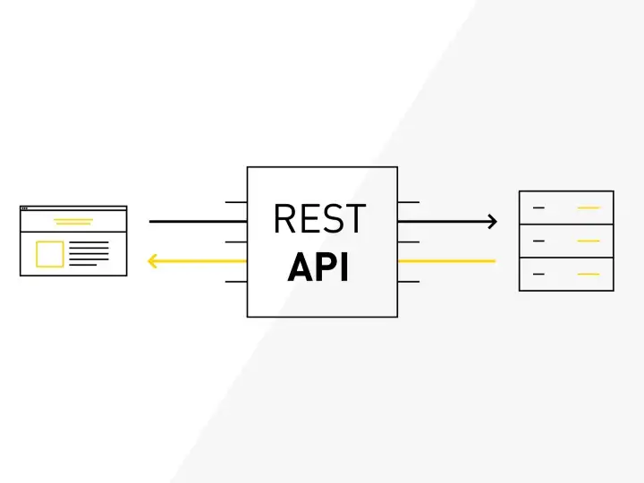
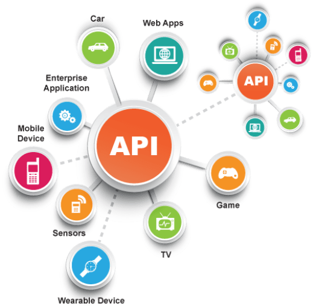

Rest (RestFul)Nedir?
REST( Representational State Transfer)istemci-sunucu arasında hızlı ve kolay iletişim kurulmasını sağlayan servis yapısı ve veri transfer yöntemidir. RESTful API, verilere erişmek ve verileri kullanmak için HTTP istekleri kullanan bir uygulama programı arabirimi (API) için mimari bir stildir.
Minimum içerikle veri alıp gönderdiği için de daha hızlıdır ve diğer alternatiflere göre daha basit bir yapıya sahiptir. REST standartlarına uygun yazılan web servislerine ise RESTful servisler denir.
REST programlama dilinden bağımsız olarak web servis oluşturmak için kullanılan bir yapıdır.
REST, HTTP protokolüne ait HTTP yöntemlerini ve HTTP durum kodlarını kullanarak gelen isteklere XML, JSON, CSV vb. olarak cevap verir.
Peki API tam olarak nedir?
Application Programming Interface — Uygulama Programlama Arayüzü anlamına gelen API terimi, farklı uygulamalar arasında veri iletişimini ve paylaşımını sağlayan bir bilgi işlem arayüzüdür. Tüm deneyimi sorunsuz hale getirerek birden fazla yazılımın bir bütün olarak birlikte çalışmasını sağlamak için yaygın olarak kullanılır.
REST ayrıca tarayıcılar tarafından kullanılan bir internet dili olarakda düşünülebilir. RESTful API, bir dizi küçük modül oluşturmak için bir işlemi parçalar. Her modül, işlemin temel bir bölümünü ele alır. Bu modülerlik, geliştiricilere çok fazla esneklik sağlar, ancak geliştiricilerin REST API’lerini sıfırdan tasarlamaları zor olabilir.RESTful API, mevcut HTTP metodolojilerini kullanır, örneğin:
-GET : Bir kaynağı almak için ;
PUT : Bir nesne, dosya veya blok olabilen bir kaynağın durumunu değiştirmek veya güncellemek için;
-POST : Bu kaynağı oluşturmak için;
-DELETE : Silmek için kullanılır.
Bu işlemleri REST kullanarak sağlamak ister isek aşağıdaki gibi bir süreç izlememiz gerekiyor.
Bu örnekte kaynağımız müşteri oluyor.
1.Müşteri kaynağına erişim sağlayan bir URL ( /services/customers )
2.Müşteri kaynağı üzerinde işlem yapmamızı sağlayan metotların tanımlanması
Sisteme yeni müşteri girme -> HTTP POST {yeni müşteri verisi}
Sistemden müşteri silme -> HTTP DELETE {müşteri tanımlayıcısı}
Sistemde var olan bir müşteriyi güncelleme -> HTTP PUT {müşteri tanımlayıcısı, güncellenmiş müşteri verisi}
Sistemde var olan bir müşteriyi görüntüleme -> HTTP GET {müşteri tanımlayıcısı}